|
|
| plants text index | photo index |
| mangroves |
| Bakau Rhizophora sp. Family Rhizophoraceae updated Jan 2013 Where seen? These trees with arching stilt roots are commonly seen in many of our mangroves. Burkill describes Rhizophora as making up 70-90% of the mangrove stock in Malaya. He describes them as growing so densely 'as to make almost pure forest' behind a 'protective belt' of Avicennia which faces the open sea. Features: Leaves eye-shaped (8-15cm long), shiny green. Older leaves with tiny evenly distributed black spots on the underside. These are cork warts, openings through which air enters. The air is then stored in specialised air spaces within the leaves called leaf aerenchyma. Here, when the air is heated, it is transported within the plant to the stems and to the specialised air spaces in the stilt roots also called aerenchymna. In this way, air reaches even the youngest root tissues that grow in the oxygen-poor mud. This internal air transport system is considered so effective that oxygen released from the roots in the mud can oxygenate the surrounding mud! The form of the flower depends on the species, usually with a hard and thick calyx. The petals are thin and fall off soon after blossoming. The fruit is brown and a long propagule eventually develops on the parent tree. The tree has stilt roots emerging in arches from the lower trunk, and prop roots may grow downwards from branches. Rhizophora means "root bearer" in Greek. According to Tomlinson, the flowers of most species of Rhizophora are wind pollinated. Human uses: According to Burkill, the trees are most used for firewood. One great advantage "in the eyes of the firewood seller" is the ease in which the timber can be split. So the seller taking it from door to door can split it to meet the needs of the buyer. It also burns evenly and produces good quality heat, even comparable to coal. It was also used to make charcoal. It is also valued as a source of tannins. In fact, the use of mangrove trees in tanning leather has been recorded by early Arab traders. Besides tanning leather, the bark was originally used by fishermen to toughen their fishing lines and ropes. The tree is much in demand for piling and house frames built near mangroves and swamps. As well as for building fishtraps. Status and threats: R. stylosa is listed as 'Vulnerable' on the Red List of endangered plants in Singapore. |
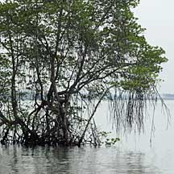 Prop roots from branches, stilt roots from trunk. Pulau Semakau, Mar 09 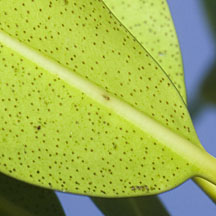 Cork warts on the underside of the leaf. 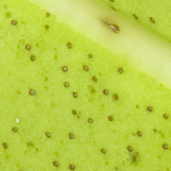 Pulau Semakau, May 07 |
|
Bakau
minyak
Rhizophora apiculata |
Bakau
kurap
Rhizophora mucronata |
Bakau
pasir
Rhizophora stylosa |
|
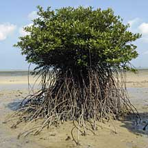 Often with a 'skirt' of many prop roots. |
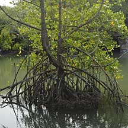 |
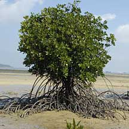 With looping stilt roots that can extend some distance from the tree. |
|
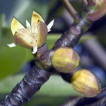 Flower on very short stalks. |
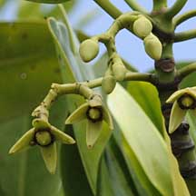 Flowers on long branching stalks. |
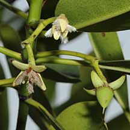 Flowers on long branching stalks. |
|
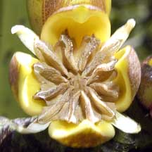 |
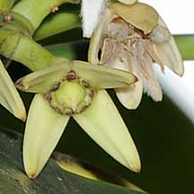 Shorter style |
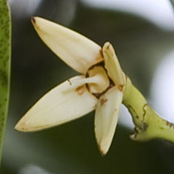 Longer style. |
|
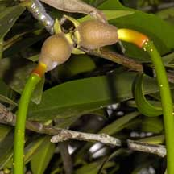 Fruit on very short stalk, almost stuck to the branch. |
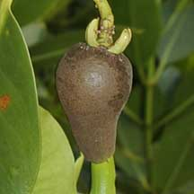 Fruit on stalks. Fruit large compared to sepals. |
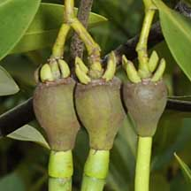 Fruit on stalks. Fruit not so large compared to sepals. |
|
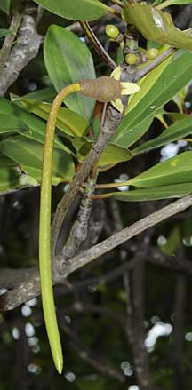 Usually a bent hypocotyl. |
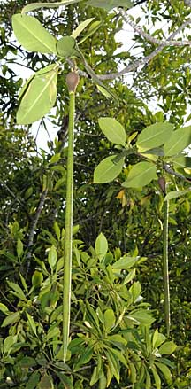 Very long hypocotyl. |
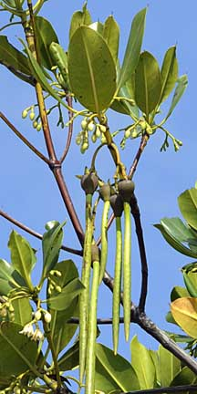 Hypocotyl not so long. |
|
Links
Other references
|